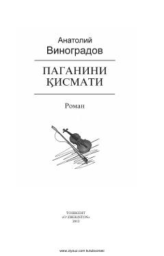

PQBuyuk skripkachi Nikolo Paganinining hayoti va ijodiga bag'ishlangan tarixiy roman.
Ushbu roman italyan bastakori va skripkachi Nikolo Paganinining mashaqqatli hayot yo'li, ijodiy izlanishlari va o'z davri jamiyatidagi ziddiyatli taqdirini badiiy tasvirlaydi. Asarda buyuk san'atkorning shaxsiy fojialari, ruhiy kechinmalari hamda uning musiqiy dahosi atrofidagi afsonalar yoritib berilgan.